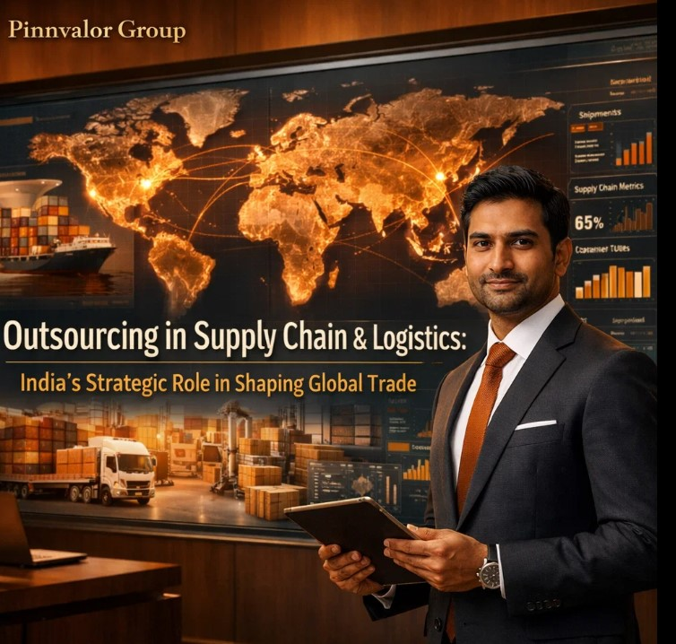

Outsourcing in Supply Chain & Logistics: India’s Strategic Role in Shaping Global Trade
In an increasingly interconnected global economy, supply chains have evolved from linear, cost-driven systems into dynamic, value-centric ecosystems. Businesses worldwide are constantly seeking ways to enhance efficiency, reduce operational costs, and improve responsiveness.
One strategy that has emerged as a game-changer is outsourcing in supply chain and logistics. At the center of this transformation stands India—a nation that has steadily positioned itself as a global hub for supply chain outsourcing.
How future-ready is your supply chain without India’s innovation edge?
From AI-powered analytics to last-mile e-commerce innovations, India is shaping the future of logistics and redefining global trade dynamics.
Understanding Supply Chain & Logistics Outsourcing
Supply chain and logistics outsourcing refers to delegating specific functions—such as procurement, inventory management, warehousing, transportation, and data analytics—to third-party service providers.
Key Functions Commonly Outsourced:
- Transportation and freight management
- Warehousing and inventory control
- Procurement and vendor management
- Order processing and fulfillment
- Supply chain analytics and reporting
Outsourcing allows organizations to focus on core competencies while leveraging external expertise to streamline operations and improve scalability.
Why India? The Strategic Advantage
1. Cost Efficiency with Value Creation
India offers significant cost advantages compared to Western markets. Today, the focus has shifted from cost arbitrage to value-driven outsourcing through process optimization and innovation.
2. Skilled Talent Pool
India has a vast pool of professionals in logistics, engineering, data analytics, and IT, capable of managing complex global supply chains efficiently.
3. Digital & Technological Capabilities
Advanced technologies used in India include:
- AI-driven demand forecasting
- Blockchain for supply chain transparency
- IoT-enabled tracking systems
4. Strategic Geographic Location
India’s location between major global trade routes enables efficient connectivity between Eastern and Western markets.
5. Government Initiatives & Infrastructure Push
Key initiatives supporting growth:
- Make in India
- National Logistics Policy
- Dedicated Freight Corridors (DFCs)
India’s Role in Global Supply Chain Transformation
1. Global Capability Centers (GCCs)
Multinational corporations are establishing GCCs in India to manage end-to-end supply chain operations.
2. Data-Driven Decision Making
Indian firms provide advanced analytics to help businesses optimize inventory, reduce lead times, and improve forecasting accuracy.
3. Resilience & Risk Management
India offers diversified sourcing options and strengthens supply chain resilience, reducing dependency on single geographies.
4. E-commerce & Last-Mile Innovation
India’s growing e-commerce ecosystem drives innovation in last-mile delivery, reverse logistics, and fulfillment strategies.

Key Benefits of Outsourcing to India
- Cost optimization without compromising quality
- Scalability and flexibility
- Access to advanced technology and analytics
- Improved visibility and transparency
- Enhanced focus on core business functions
Challenges and Considerations
1. Infrastructure Gaps
Despite improvements, some regions still face logistical challenges.
2. Regulatory Complexity
Navigating tax structures and compliance requirements can be complex for foreign companies.
3. Coordination Across Time Zones
Effective communication is essential for managing global supply chain operations.
4. Vendor Selection & Risk
Choosing the right outsourcing partner is critical to ensure quality and reliability.
Future Outlook: India as a Global Logistics Powerhouse
Emerging Trends:
- Green and sustainable logistics
- AI-powered logistics systems
- Cloud-based supply chain platforms
- Expansion of multimodal logistics networks
With continued investment, India is set to become a global leader in supply chain innovation.
Conclusion
Outsourcing in supply chain and logistics is no longer just a tactical decision—it is a strategic imperative. India’s evolution into a high-value outsourcing partner is reshaping global trade.
For businesses aiming to build resilient and future-ready supply chains, India offers a powerful combination of efficiency, innovation, and strategic advantage.